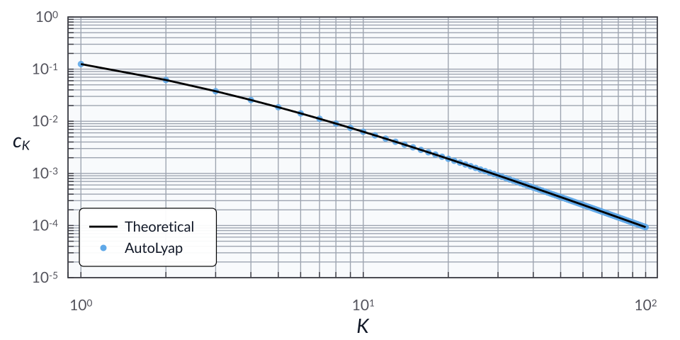

The optimized gradient method
Problem setup
Consider the unconstrained minimization problem
where \(f : \calH \to \reals\) is convex and \(L\)-smooth with \(L>0\).
For initial points \(x^0, y^0 \in \calH\) and iteration budget \(K \in \mathbb{N}\), the optimized gradient method [KF15] is given by
In this example, we search for the smallest AutoLyap certificate constant \(c_K\) such that
where \(x^\star \in \Argmin_{x \in \calH} f(x)\).
Model the problem in AutoLyap and search for the smallest c_K
\(f\) is modeled by
SmoothConvex.The optimization problem is represented by
InclusionProblem.The update rule is represented by
OptimizedGradientMethod.Initial-horizon parameters are obtained with
IterationDependent.get_parameters_distance_to_solution.Final-horizon function-value parameters are obtained with
IterationDependent.get_parameters_function_value_suboptimality.The certificate constant is computed with
IterationDependent.search_lyapunov.
Run the iteration-dependent analysis
This example uses the MOSEK Fusion backend (backend="mosek_fusion").
Install the optional MOSEK dependency first:
pip install "autolyap[mosek]"
from autolyap import IterationDependent, SolverOptions
from autolyap.algorithms import OptimizedGradientMethod
from autolyap.problemclass import InclusionProblem, SmoothConvex
L = 1.0
K = 5
problem = InclusionProblem([SmoothConvex(L)])
algorithm = OptimizedGradientMethod(L=L, K=K)
solver_options = SolverOptions(backend="mosek_fusion")
# License-free option:
# solver_options = SolverOptions(backend="cvxpy", cvxpy_solver="CLARABEL")
Q_0, q_0 = IterationDependent.get_parameters_distance_to_solution(
algorithm,
0,
i=1,
j=1,
)
Q_K, q_K = IterationDependent.get_parameters_function_value_suboptimality(
algorithm,
K,
)
result = IterationDependent.search_lyapunov(
problem,
algorithm,
K,
Q_0,
Q_K,
q_0=q_0,
q_K=q_K,
solver_options=solver_options,
)
if result["status"] != "feasible":
raise RuntimeError("No feasible chained Lyapunov certificate for this setup.")
c_K = result["c_K"]
theta_K = algorithm.compute_theta(K, K)
c_K_theory = L / (2.0 * theta_K ** 2)
print(f"c_K (AutoLyap): {c_K:.6e}")
print(f"c_K (theory): {c_K_theory:.6e}")
What to inspect in result:
result["status"]:feasible,infeasible, ornot_solved.result["solve_status"]: raw backend status.result["c_K"]: certified finite-horizon constant when feasible.result["certificate"]: chained Lyapunov certificate matrices/vectors.
The computed value c_K (AutoLyap) matches (up to solver numerical
tolerances) the theoretical horizon-K expression:
In particular,
Sweeping over \(K \in \llbracket 1, 100\rrbracket\) gives the log-log plot below, with the theoretical bound in black and AutoLyap certificates as blue dots.
{kind=link}

References
Donghwan Kim and Jeffrey A. Fessler. Optimized first-order methods for smooth convex minimization. Mathematical Programming, 159(1-2):81–107, October 2015. doi:10.1007/s10107-015-0949-3.